You've Never Heard of the Company That Made Your Phone
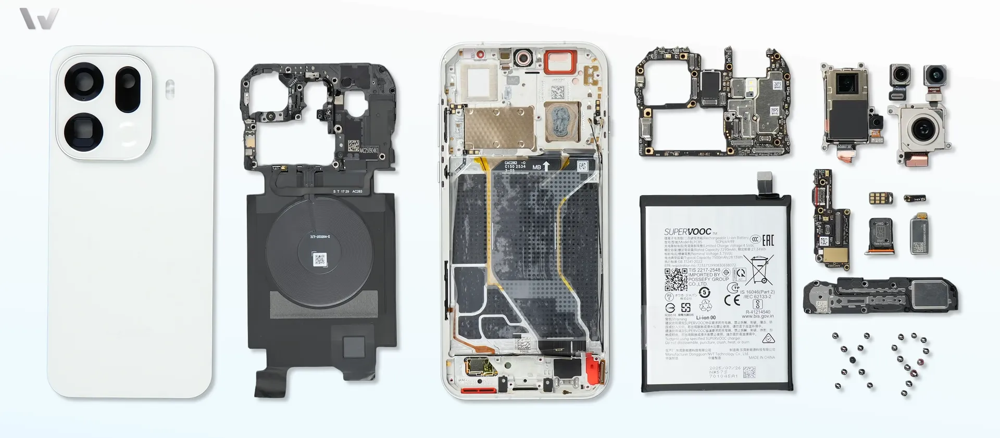
Ask someone what's inside their Android phone and they'll probably say Samsung. Or Sony. Maybe Qualcomm if they're a little nerdy about it. And they're not wrong, but they're also not nearly as right as they think they are. Because Samsung makes phones, yes. Sony makes phones. But Samsung also makes the screen inside your Pixel. Sony makes the camera sensor inside your Vivo. The company that built your phone and the company that supplied the parts are often, bizarrely, the same company, just wearing a different hat on a different day.
This happens because the modern smartphone is too complex for any one company to master every single component. To do so would be a financial suicide mission. Instead, the industry relies on hyper-specialization. A brand like Xiaomi or OnePlus focuses on software, industrial design, and marketing, while outsourcing the hard physics of hardware to companies that do nothing else. It is a matter of efficiency and survival: why spend ten billion dollars building a display factory when you can simply buy the best panels from someone who already did?
And that's before we get to the companies you've genuinely never heard of. The ones with no Super Bowl ads, no flagship stores, no brand identity whatsoever. The ones that are, in a very real sense, also your phone.
Your Screen Probably Came From a Company You've Never Googled
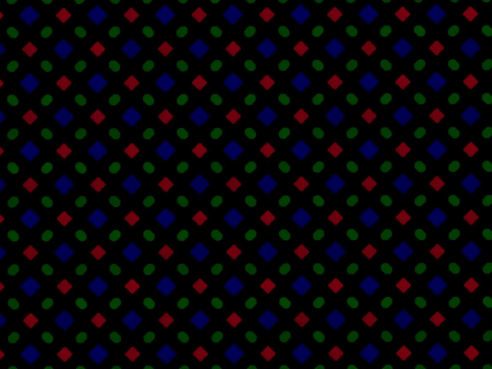
Pull up any mid-range Android, a Galaxy A-series, a Redmi, a Moto G something, flip it over, and somewhere in the fine print it'll say the display is AMOLED or LCD. What it won't say is who actually made it.
The answer, more often than not, is BOE. They are a Chinese panel manufacturer that has quietly become one of the largest display producers on the planet, and outside of the industry, essentially nobody knows their name. They make OLED panels now. Good ones. Good enough that Vivo and Huawei both chose them over Samsung Display for their flagship lines, not as a cost-cutting measure, but because the quality got there.
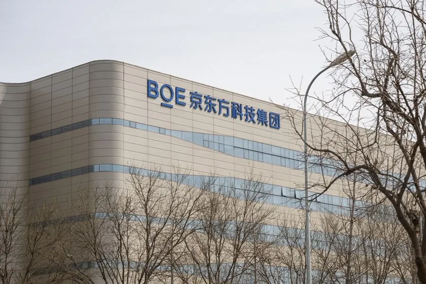
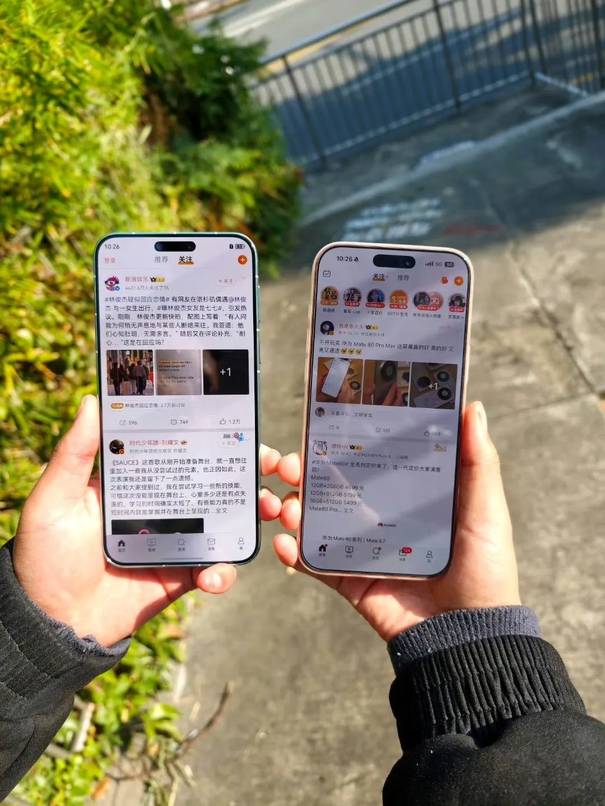
Samsung Display and LG Display are the prestige names. Their panels still command a premium and show up in flagships from Google, OPPO, and others. But the gravitational center of the Android market has shifted toward Chinese domestic suppliers, and it has done so fast enough that brands aren't just buying from them, they're locking in. Xiaomi went exclusive with TCL CSOT across their flagship and upper mid-range lineup. OPPO bought an entire Tianma production line outright, drawn by Tianma's ability to hit bezels approaching 1mm. These aren't supplier relationships anymore. They're vertical integration by a different name.
The reason is straightforward: a company like BOE produces panels for dozens of clients at a scale that drives the cost of a high-end OLED down to a fraction of what any single phone brand could manage alone. The screen you're staring at right now has a longer, stranger biography than you'd expect, raw materials, glass substrates, thin-film transistors deposited in a cleanroom, cutting, laminating, testing, shipping across borders, and the brand on the box had very little to do with any of it.
The Chip in Your Phone Was Designed by One Company, Built by Another, and Packaged by a Third
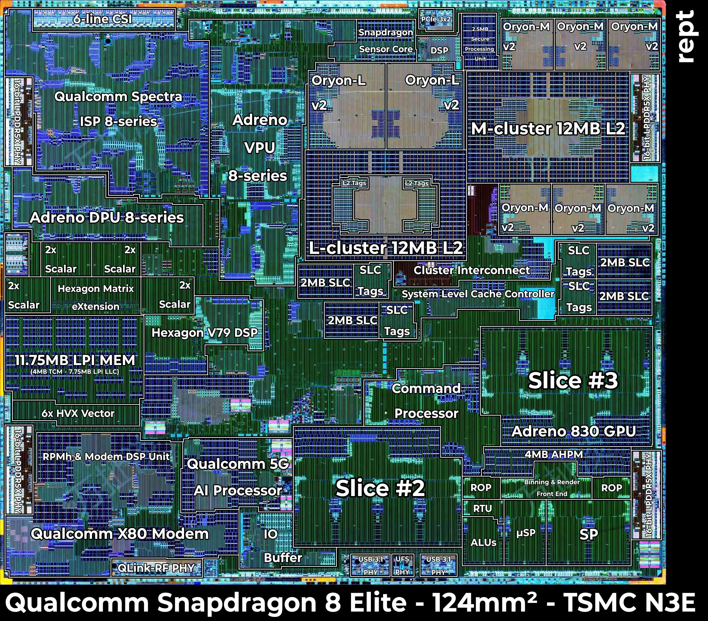
This one catches people off guard.
When Qualcomm announces the Snapdragon 8 Elite Gen 5, or MediaTek announces the Dimensity 9500, they are announcing a chip they designed. The actual physical object, the silicon, gets made somewhere else entirely. Usually TSMC in Taiwan. Sometimes Samsung Foundry in South Korea. Occasionally both, depending on production splits, or if one foundry suddenly fails on expectations.
This is called fabless manufacturing, and it's how almost the entire semiconductor industry works. Qualcomm has no fabs. MediaTek has no fabs. They are, at their core, enormous teams of engineers who design chips on computers and then hand the blueprints to someone else to physically manufacture. And even the designs aren't fully theirs: the instruction set architecture that Qualcomm and MediaTek build on top of is licensed from ARM, a British company owned by SoftBank. So the chip in your phone was architected in Cambridge, designed in San Diego or Taipei, fabricated in Taiwan, and packaged in South Korea before it ever touched a production line. TSMC takes those blueprints, exposes them onto silicon wafers using machines so precise they operate at wavelengths of light measured in nanometers, and ships the finished chips to wherever the phone is being assembled.
The reason for this split is pure economics. A single gigafab capable of producing 3-nanometer chips costs upwards of $20 billion to build and requires billions more every year to maintain. If Qualcomm built its own factories, a single bad year could bankrupt the company. By using TSMC, they share that massive capital risk with Apple, Nvidia, and AMD.
But even after TSMC finishes the wafer, the chip isn't done. The raw silicon die has to be packaged: encased in a protective housing, wired up, and tested before it's usable. That step often goes to Amkor Technology, a South Korean packaging specialist whose name appears on almost no consumer products and almost every high-end chip. The Snapdragon in a flagship Android was likely packaged by Amkor before it ever saw the inside of a phone.
And even after the chip is designed, fabbed, and packaged, Qualcomm still isn't done collecting. They hold a portfolio of fundamental wireless patents covering CDMA, LTE, and 5G that is so broad and so deeply embedded in the standards themselves that every phone manufacturer owes them a licensing fee, regardless of whose chip is inside. Buy a phone with a MediaTek processor specifically to cut Qualcomm out of the picture, and Qualcomm still gets a cut of the sale price. Not the chip price. The phone price. This has been the subject of antitrust battles across the US, EU, South Korea, and China for the better part of a decade, and Qualcomm has won most of them. Ericsson and Nokia run the same playbook with their own 4G and 5G standard-essential patents. The royalty line on a phone manufacturer's balance sheet is longer and stranger than any spec sheet would suggest.
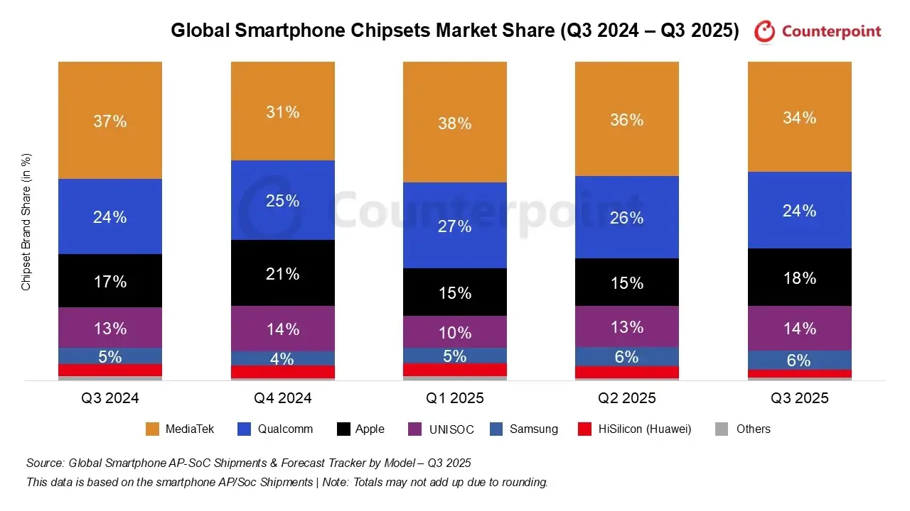
If you're on a budget Android, think the phones sold across Southeast Asia, Africa, and India, the SoC might be from Unisoc instead, a Chinese chipmaker that is genuinely excellent at making capable chips cheap. Unisoc isn't alone down there. Allwinner Technology is another Chinese SoC maker that shows up in the places spec sheets don't: cheap tablets, knockoff devices, the Android box someone's uncle bought off AliExpress. Allwinner chips power a surprising amount of the world's low-cost computing. They're not trying to compete with Snapdragon. They're serving a market Snapdragon doesn't particularly want.
The Brands That Decided to Do It Themselves
And then there are the brands that said forget it and made their own.
Huawei designed the Kirin series in-house through its semiconductor subsidiary HiSilicon, until US export controls cut off their access to TSMC's fabs and forced a painful reset. But Huawei didn't stop. They pivoted to SMIC, China's leading domestic foundry, and have been climbing back ever since. The latest Kirin 9030 Pro is manufactured on SMIC's N+3 process node, roughly equivalent to TSMC's N6, which is not cutting-edge by global standards, but far closer than most expected China to get this fast.
Samsung does the same with Exynos, fabbing their own chips at Samsung Foundry and using them in select Galaxy devices depending on region, meaning two people can buy the same Galaxy model in different countries and have completely different processors inside.
Google does it too with Tensor, designed in-house for the Pixel line. Early generations were manufactured by Samsung Foundry, but starting with the G5, Google moved production to TSMC, the same fab everyone else is fighting for capacity at. Xiaomi has entered the game too with the Xring 01, their first in-house SoC, debuted in the Xiaomi 15S Pro, going after raw performance rather than AI workloads. The instinct is the same across all of them: if the chip is central enough to your product vision, and you have the capital, you stop renting and start owning.
Your Camera Is a Collaboration Between Companies That Have Never Met
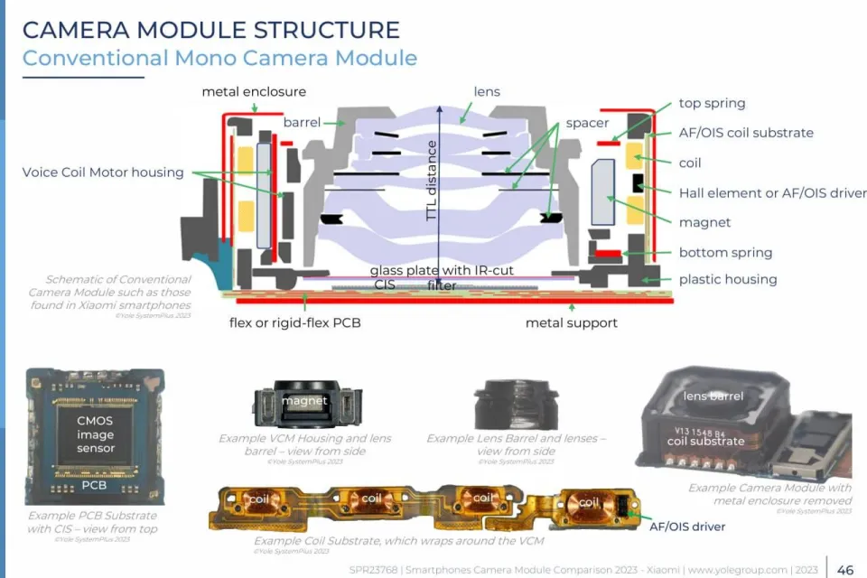
The camera system on a modern Android phone is not a single thing made by a single company. It's a stack, and each layer has its own supplier.
Start with the lens. The precision glass elements inside your camera module, the ones that focus light onto the sensor, came from one of maybe three factories in the world. The cinematic lens your phone brand is marketing? That's industrial-scale optical glass from a supplier like Sunny Optical or Samsung Electro-Mechanics, ground and coated by engineers who will never know which phone it ends up in.
The sensor underneath the lens is a different company entirely. Sony's IMX series, now rebranded as Lytia, is the longtime prestige choice, and Sony Semiconductor supplies sensors to Xiaomi, OPPO, Vivo, and others who are, in a different context, Sony's competitors in the phone market. Samsung ISOCELL has shifted toward a more specific lane: high-pixel-count telephoto sensors and cheaper fills like the JN5, rather than chasing the main camera crown across the board. OmniVision has been moving up the stack aggressively, with their OV50X going after Lytia territory directly.
SmartSens is the sharpest example of the challenger supplier. While they became Huawei's primary sensor supplier after US export controls, they weren't just filling a gap. Their flagship sensor landed as the main camera on the Xiaomi 17 Pro and Pro Max, competing on dynamic range through LOFIC technology, and sensors like the SC532HS are already displacing Lytia's mid-range offerings on devices like the Poco X8 Pro Max.
Then there's the thing nobody thinks about: the actuator. The tiny electromagnetic coil-and-magnet assembly that physically moves the lens for optical image stabilization. A handful of Japanese precision manufacturers, companies like Alps Alpine and TDK, are the reason your night shots don't look like abstract paintings. Without them the sensor is just a very expensive way to capture blur.
The Memory and Storage You Never Chose
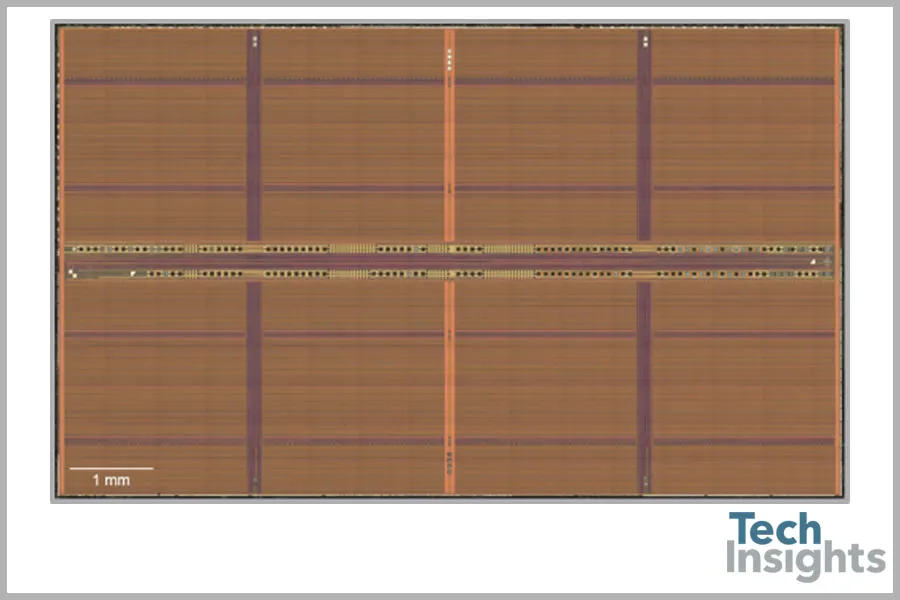
Nobody buys a phone because of who made the RAM. But every app you have open right now is sitting in memory manufactured by one of maybe four companies on the planet. SK Hynix and Samsung Semiconductor dominate mobile DRAM and have for years. Micron is the third major player. Between them, those three control the overwhelming majority of the world's DRAM supply, and the LPDDR5X in your flagship Android almost certainly came from one of them. The phone brand had no say in the physics of that chip. They placed an order, specified a capacity, and got what was available on the production line that quarter. The Galaxy S26 Ultra is a perfect example: Samsung makes their own LPDDR5X through Samsung Semiconductor, but due to the ongoing RAM supply crunch they had to mix in Micron chips across production runs. Even the company that manufactures DRAM can't always source enough of it from themselves.
South Korea's SK Hynix and Samsung, alongside U.S.-based Micron, account for almost all of the global market for DRAM, with China's CXMT in fourth place.
CXMT, a Chinese DRAM manufacturer, is the newcomer that's already arrived. Their LPDDR5X chips are shipping in phones from Honor, Xiaomi, and others across mid-range and flagship tiers alike. CXMT exists because China looked at the DRAM oligopoly and decided strategic dependence on three foreign companies was not acceptable. Whether their product catches up to SK Hynix on performance is almost beside the point. The goal is supply security. CXMT, YMTC, SMIC, BOE: these companies all exist, at least in part, because the US-China chip war and its cascading export controls turned semiconductor self-sufficiency from an ambition into a national imperative.
Storage is a similar story with different names. When you install a 3GB game in eight seconds instead of forty, that speed comes from the flash chip and its controller, not anything the phone brand engineered. The NAND flash itself was probably made by Samsung, SK Hynix, Kioxia, or Western Digital. On the Chinese side, YMTC has been aggressively scaling their 3D NAND production and is already supplying UFS chips to domestic phone brands. The UFS 4.0 controller that talks to that flash? Often from Samsung or a specialist like UNIC Memory.
The Battery That Came From an EV Factory
The single largest physical component in your phone, by volume and by weight, is the battery. And the company that made it is almost certainly not the company whose logo is on the phone.
ATL, Amperex Technology Limited, is the dominant supplier for smartphone batteries and has been for years. They make cells for Apple, Huawei, Xiaomi, OPPO, Vivo, and essentially every other major brand. Samsung is one of the few that also makes their own cells through Samsung SDI, but even Samsung mixes in Chinese-made batteries across their lineup for cost reasons. Their parent company, CATL, is the world's largest EV battery manufacturer. The lithium-ion chemistry that powers your phone and the chemistry that powers a Tesla share R&D lineage: improvements developed for electric vehicles, where energy density is life or death, flow downstream into the cells that end up in phones.
BYD also manufactures phone batteries through its electronics division, the same BYD that builds electric cars and assembles phones. Sunwoda is another major supplier, particularly for Chinese brands. The silicon-carbon anode batteries now appearing in flagships, the ones that promise higher energy density in the same physical space, are being pushed by ATL and Sunwoda, but CosMX is the one pushing the silicon-carbon barriers the hardest. They don't have the production capacity of ATL or Sunwoda, but their energy density numbers are ahead of the pack. If your phone now lasts two days on a charge instead of one, thank CosMX or ATL, not the brand that put its name on the back. When a phone brand advertises silicon-carbon battery technology, they are advertising their supplier's chemistry, not their own.
The Parts You'd Never Think to Ask About
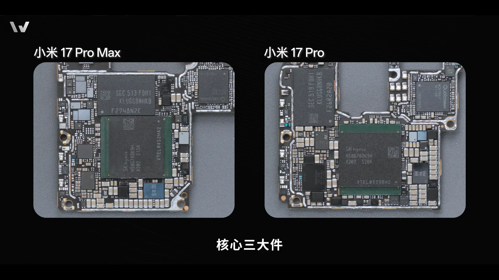
This is where it gets genuinely strange. Your phone contains thousands of MLCCs, multilayer ceramic capacitors: tiny rectangular components, smaller than a grain of rice, that regulate current and filter noise across the circuit board. Murata makes a huge proportion of them. Samsung Electro-Mechanics makes many of the rest. They are everywhere on the board, invisible, essential, and so commoditized that Murata has effectively become a utility.
Why doesn't a phone brand make their own capacitors? Because Murata has spent decades perfecting the chemistry and manufacturing of these tiny blocks. For a phone brand to replicate that would be like a car company trying to manufacture its own screws and bolts. It is far more efficient to buy from the master of the craft.
The same applies to haptics and sound. The vibration when your phone buzzes? That haptic motor was probably made by AAC Technologies or Goertek. The speaker you listen to music through? Also likely AAC or Goertek. Your microphone when you make a call? Could be them too. When you unlock your phone with your fingerprint, Goodix is probably the company reading it. They make under-display optical sensors and also happen to make display driver ICs and audio amplifiers. Goodix is the kind of company that exists entirely inside other companies' products, which is a strange and lucrative place to be.
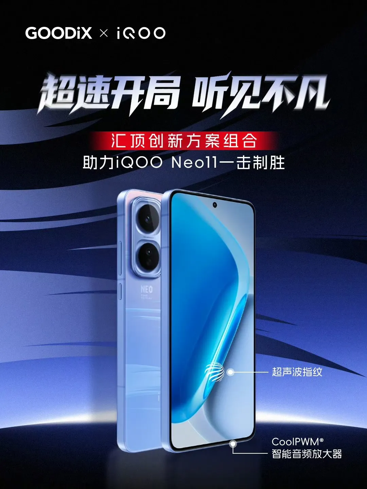
And then there's the hidden silicon that sits next to the main SoC but never makes the spec sheet. Every phone has a display driver IC, a DDIC, that translates the processor's instructions into the signals your screen actually understands. It has a PMIC, a power management IC, that decides how voltage and current flow to every component on the board. These are made by companies like Qualcomm, Texas Instruments, Dialog Semiconductor, and Novatek. Nobody markets them. They are invisible and absolutely load-bearing.
More interesting is what happens when phone brands buy third-party chips and rename them. Vivo's V-series imaging chip, marketed as their custom ISP, is co-developed with external silicon partners. Pixelworks makes display upscaling and motion processing chips that multiple brands license, rebrand, and present as proprietary technology. When a phone brand announces their custom display chip or dedicated imaging processor, the honest version is usually: they specified the requirements, a specialist designed the silicon, and the brand put their name on it. It's the ODM model applied to individual chips instead of entire phones.
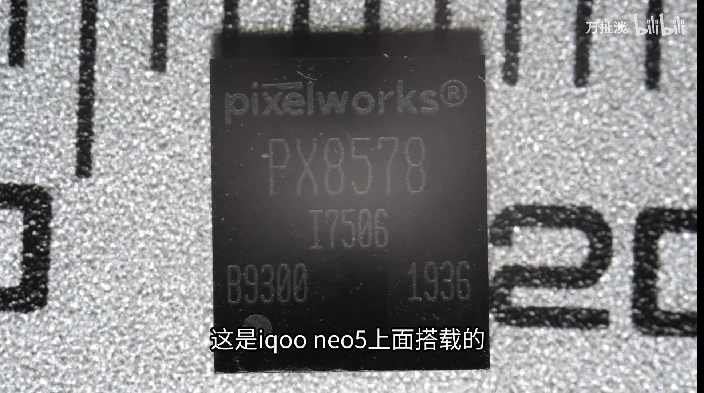
The Stuff You Actually Touch
The physical experience of your phone, the feel of it in your hand, the tap of the glass, the solidity of the frame, that's its own supply chain.
The glass on the front is almost certainly Corning Gorilla Glass. Corning is one of the few component suppliers that has successfully become a consumer brand, largely because phone makers let them put their name in ads. On cheaper devices it might be Schott glass instead, or Panda Glass, a Chinese-made alternative. Some brands have gone further and named their own glass. Xiaomi calls theirs Dragon Crystal Glass. Honor has Rhino Glass. Huawei has Kunlun Glass. The names are distinctive, but the underlying material in most cases comes from Chongqing Xinjing. The processing and coatings? Lens Technology. Sometimes Biel Crystal.
The aluminum or titanium frame around the phone was probably machined by Everwin Precision. CNC machining at phone-component tolerances and volumes is its own industry. Everwin also makes board shielding and foldable hinges, the single most mechanically complex component in any consumer device.
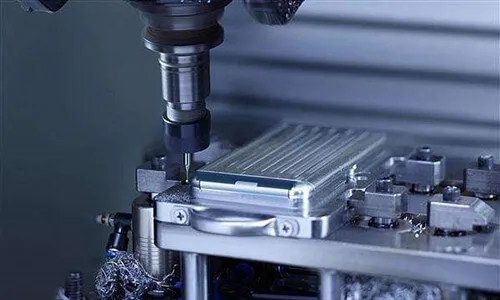
Who Actually Puts It Together
After all of that, someone has to assemble it. And this is where it gets more complicated than it looks.
Some brands do it themselves. Samsung has its own factories, as does Xiaomi. For flagship products, keeping assembly in-house allows for tighter quality control. But manufacturing at volume across an entire lineup is a different problem. The mid-range and budget tier is where contract manufacturers come in: Foxconn, Luxshare, BYD, Pegatron, Wingtech, and Huaqin all handle significant volume for multiple brands simultaneously.
And then there's the layer beneath that: ODMs, or original design manufacturers. They don't just assemble phones, they design them. A company like Wingtech builds a complete reference phone and sells that design to multiple brands, who slap their own logo on it, tweak the software, and ship it. That budget Nokia and that entry-level Motorola sitting next to each other on a shelf might be running on the same underlying design from the same factory.
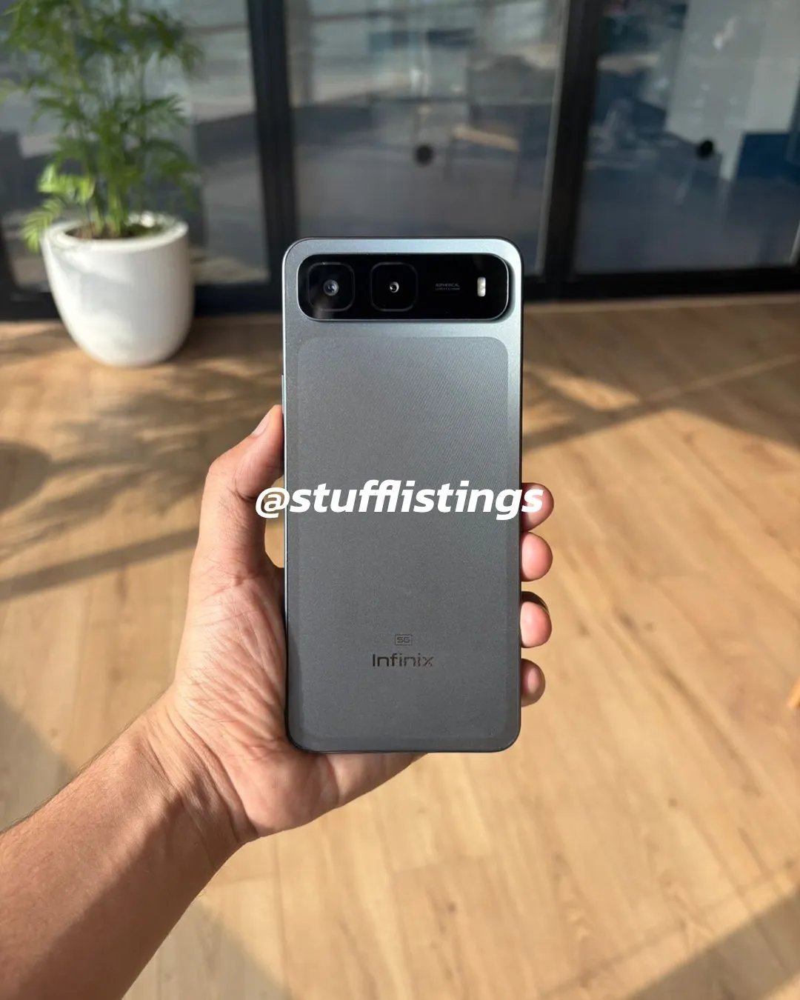
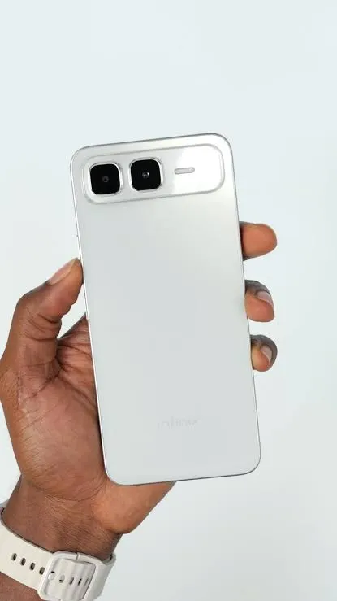
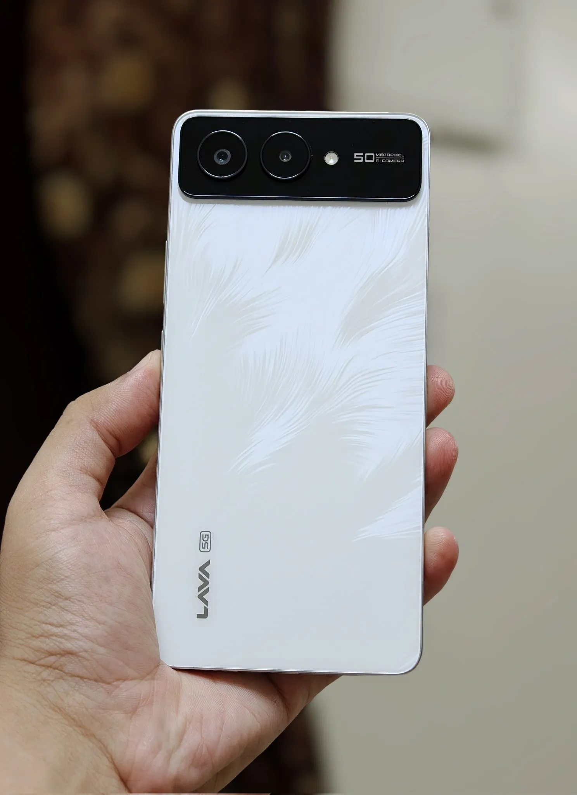
This is a system that works fine until someone decides to lie about it. In 2026, a brand called AI+, part of NxtQuantum Shift Technologies and led by Madhav Sheth, launched a phone in India under the banner of the government's Make in India initiative, claiming it was the product of Indian R&D. It was a ZTE Nubia Flip 2. Rebranded. Assembled by a contract manufacturer called Ismartu. Built from refurbished parts. The uniquely designed operating system was a reskin. Nobody at NxtQuantum designed the hardware, because there was no hardware to design. They bought a reference design, put their name on it, and called it national innovation.
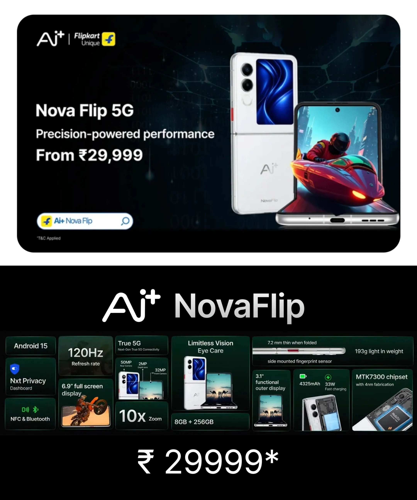
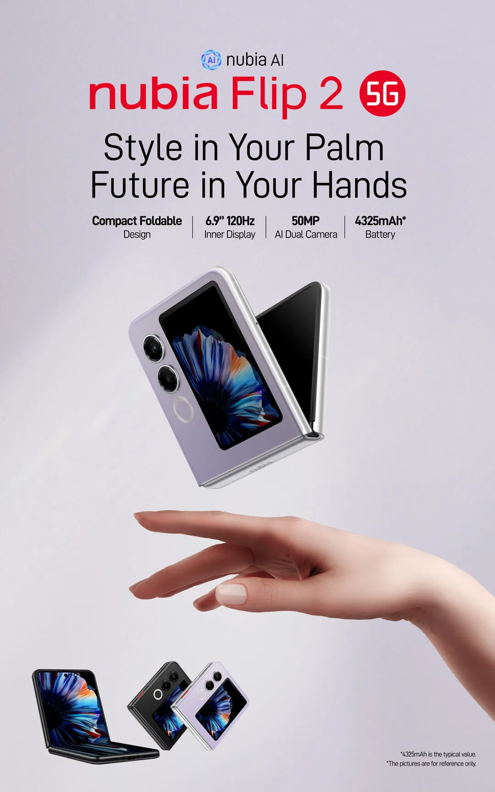
The ODM model isn't inherently dishonest. Most of the industry runs on it and nobody pretends otherwise. The problem is when the supply chain's invisibility gets used as cover for a claim that couldn't survive five minutes of scrutiny. And that invisibility is structural, not accidental. When the same reference design is available to dozens of buyers, when the same parts ship to dozens of factories, when nothing about the physical object in your hand requires the brand on the back to have touched it at all, the gap between "we made this" and "we ordered this" becomes trivially easy to paper over. The AI+ story isn't an anomaly. It's what the system looks like when someone decides honesty is optional.
The "Why" of the Whole System
The why of the whole system is specialization. A phone brand is the architect. They create the vision, the software, and the user experience. For brands like Xiaomi, OnePlus, and Realme, the actual value they add is software integration, UI optimization, and camera tuning, not the hardware itself, because they don't make any of it. The suppliers are the masons, the electricians, and the plumbers.
Apple is the exception that proves how deep this goes. They don't escape the supply chain; they colonize it. Sony still makes their camera sensors, but Apple co-specifies the silicon so the part inside an iPhone is functionally a custom chip. TSMC still fabricates their processors, but Apple designs every transistor. Corning still provides the glass, but Apple co-funded the R&D through their Advanced Manufacturing Fund and gets exclusive Ceramic Shield formulations before the general market. Foxconn still assembles the phone, but Apple designs the tooling, writes the test software, and owns the jigs; Foxconn cannot sell that design to anyone else. Apple even bakes the storage controller directly into the A-series SoC rather than buying one off the shelf. No other phone brand operates at that depth across every layer of the stack. The difference between Apple and everyone else is not independence; it's influence.
And this is why software matters more than the spec sheet implies. A Sony Lytia 901 sensor sitting inside an OPPO and the exact same sensor inside a Vivo will produce visibly different photos, because OPPO and Vivo wrote entirely different computational photography pipelines on top of it. The hardware is a platform. The software is the opinion. Two architects working from the same bricks will build very different houses.
The next time you pick up your phone, consider what you're actually holding. A BOE display. A Sony sensor. A MediaTek or Snapdragon chip that crossed three countries before it arrived. Murata capacitors by the thousand. An AAC haptic motor. Goodix reading your fingerprint. Corning protecting the front, Lens Technology the back, Everwin holding it all together. Assembled by Foxconn or Luxshare or BYD.
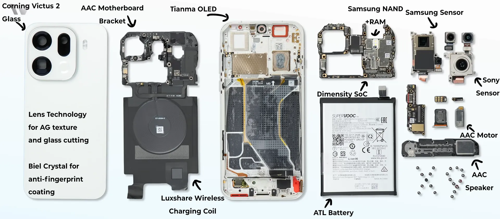
The brand on the back is real. The product is theirs. But the company that made it and the company whose name is on it have never been the same thing.